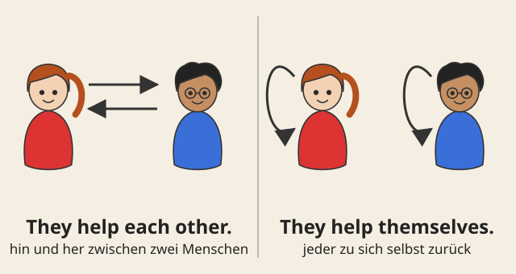

each other: hin und her
Mit einem KI-Tutor lernen
Ein KI-Tutor erklärt dir diese Seite und hilft dir bei den Aufgaben. Wähl deinen Assistenten:
Mit Claude öffnen Mit ChatGPT öffnen Mit Mistral Vibe öffnen
Du nutzt dein eigenes Konto beim Anbieter. Der Assistent ist kein Angebot von lernapps.net: lernapps liefert nur Inhalte und Aufgaben. Die Wahl gilt für alle Seiten, nur auf diesem Gerät.
Nach der Klettertour
Ellie und Amir haben sich beim Klettern gegenseitig gesichert. Jetzt sprechen sie mit den anderen über den Tag.
Das kannst du danach: Du unterscheidest each other („einander“) von themselves und ourselves („sich selbst“).
Aufgabe
Lösung
themselves
themselves würde heißen, dass sie sich selbst sehen.
them richtige Antwort
them ist für andere Personen und steht nach dem Verb.
they
they steht vor dem Verb.
Andere Personen nach dem Verb: them.
Lesestück: Photo time
Lies den Dialog. Die Zahlen sind die Zeilen. Wörter, die du vielleicht nicht kennst, stehen unter dem Text.
1 · Mr Hill: Good work today, you two. You helped each other on the wall.
2 · Ellie: Thanks! Amir held the rope for me, and I held it for him.
3 · Amir: Yes, we trust each other. A year ago we could not climb at all.
4 · Sophie: Did somebody teach you?
5 · Ellie: No, we taught ourselves with videos. Then we corrected each other.
6 · Amir: Peter watched us. Peter says we always argue with each other, but that isn't true!
7 · Ellie: We just talk to each other a lot. Ha ha.
8 · Peter: Sophie and I were proud of you. We took photos of each other, too.
9 · Sophie: And now the climbers are taking selfies of themselves!
10 · Amir: Look! Ellie is taking a photo of herself, and I am taking one of myself. Nobody is looking at each other!
11 · Mr Hill: Then look at each other for a second and smile. Photo time!
| Englisch | Deutsch |
|---|---|
| hold, held | halten |
| rope | Seil |
| trust | vertrauen |
| correct | verbessern |
| argue | streiten |
| selfie | Foto von sich selbst |
| laugh | lachen |
Aufgaben zum Text
Stufe 1 · Verstehen
Aufgabe
Lösung
Mr Hill
Mr Hill lobt die beiden nur.
Sophie
Sophie hat unten zugesehen.
Amir richtige Antwort
Zeile 2: Amir held the rope for me, sagt Ellie.
Ellie erzählt es in Zeile 2.
Aufgabe
Lösung
Richtige Antwort: Die Aussage stimmt nicht.
Sie haben es sich selbst mit Videos beigebracht.
Stufe 2 · Belegen mit der Zeile
Aufgabe
Lösung
Zeile 3
Dort sagt Amir, dass sie sich vertrauen.
Zeile 5 richtige Antwort
Zeile 5: Then we corrected each other.
Zeile 7
Dort geht es ums Reden.
Zeile 9
Dort geht es um Selfies.
Suche das Wort corrected.
Aufgabe
Lösung
Zeile 8
Dort machen Sophie und Peter Fotos voneinander.
Zeile 9
Dort geht es um alle Kletterer, nicht um Ellie und Amir einzeln.
Zeile 10 richtige Antwort
Zeile 10: Ellie fotografiert sich selbst (herself), Amir fotografiert sich selbst (myself).
Zeile 11
Dort spricht Mr Hill.
Wer macht das Foto von wem?
Stufe 3 · Meinung
Offene Aufgabe
Mr Hill sagt: Schaut euch kurz an und lächelt. Ist es wichtig, dass sich Freunde bei einem Foto ansehen und nicht nur auf das Handy schauen? Schreibe zwei bis drei Sätze mit einem Grund.
Eine gute Antwort enthält:
- Eine klare Meinung (wichtig oder nicht wichtig). (Form)
- Ein Grund, zum Beispiel: Man erinnert sich an das Gefühl, nicht nur an das Bild. Nachlesen
- Ganze Sätze mit einem Grund (weil …). (Form)
Lösung
Ich finde es wichtig, weil man sich dann besser an den Moment erinnert. Außerdem sieht ein Foto netter aus, wenn alle lachen.
Hin und her oder zurück
In Zeile 1 helfen sich Ellie und Amir gegenseitig: Ellie hilft Amir, und Amir hilft Ellie. Dafür steht each other. Der Pfeil geht zwischen den beiden hin und her. Bei themselves geht der Pfeil von jeder Person zu ihr selbst zurück.

Links gehen die Pfeile hin und her: each other. Rechts geht jeder Pfeil zur selben Person zurück: themselves.
Quelle: eigene Zeichnung. Lizenz: CC-BY-4.0.Merke
each other heißt „einander“ oder „gegenseitig“ und braucht mindestens zwei Personen. Das Deutsche sagt in beiden Fällen „sich“: sie helfen sich (einander) und sie helfen sich (selbst). Im Englischen sind das zwei verschiedene Wörter. Auf dem Poster bekommt each other einen eigenen Kasten neben der Spalte „Wer ist es selbst?“.
Übung
Aufgabe
Lösung
themselves
themselves hieße, dass jeder sich selbst anruft.
them
them ist für andere Personen, nicht für die beiden selbst.
each other richtige Antwort
each other: Der Pfeil geht hin und her.
Hin und her: each other.
Aufgabe
Lösung
each other
each other hieße, dass Ellie Amir zeichnet und Amir Ellie.
themselves richtige Antwort
themselves: Jeder fotografiert sich selbst.
them
them ist für andere Personen.
Jeder zu sich selbst zurück: themselves.
Aufgabe
Lösung
theirselves
Hier passt each other besser, denn jeder sieht den anderen an.
themselves
themselves hieße, dass jeder sich selbst ansieht.
each other richtige Antwort
each other: Sophie sieht Peter an und Peter sieht Sophie an.
Sie sehen einander an: each other.
Aufgabe
Lösung
Richtige Antwort: 1. Peter and Sophie, 2. like, 3. each other
Zuerst steht, wer es tut, dann das Verb, zuletzt each other.
Aufgabe
Schreibe den Satz auf Englisch.
- Sie schreiben sich jeden Tag Nachrichten. (einander)
- Sie sehen sich jeden Tag. (zwei Freunde, einander)
- Sie haben sich selbst Gitarre spielen beigebracht.
Lösung
- They write messages to each other every day. (auch richtig: They write messages to one another every day.; They send messages to each other every day.; They send messages to one another every day.)
- They see each other every day. (auch richtig: They see one another every day.)
- They taught themselves how to play the guitar. (auch richtig: They taught themselves to play the guitar.; They have taught themselves how to play the guitar.; They have taught themselves to play the guitar.)
Aufgabe
Lösung
Richtige Antwort: Die Aussage stimmt nicht.
Bei themselves ruft jeder sich selbst an. Einander heißt each other.
Aufgabe
Lösung
They look at themselves.
themselves hieße: jeder sieht sich selbst an.
They look at theirselves.
theirselves gilt als falsch.
They look at each other. richtige Antwort
each other: Ellie sieht Amir an und Amir sieht Ellie an.
Einander: each other.
Aufgabe
Hör zu und schreibe, was du hörst.
- KI
- KI
- KI
Lösung
- The twins know each other well.
- Do you see each other often?
- The boys made themselves a pizza.
Selbst sagen und schreiben
Aufgabe
Hör zu, sprich nach und nimm dich auf. Vergleiche dann mit dem Original.
Tipp
Hör das Beispiel zuerst. Sprich dann langsam nach und vergleiche deine Aufnahme mit dem Original.
- Please be kind to each other.KI
- The girls are talking to each other.KI
- They can do it themselves.KI
Zum Aufnehmen braucht diese Aufgabe JavaScript. Die Beispiele kannst du auch ohne anhören.
Lösung
- Please be kind to each other.
- The girls are talking to each other.
- They can do it themselves.
Offene Aufgabe
Schreibe zwei englische Sätze über dich und einen Freund oder eine Freundin: einen mit each other und einen mit ourselves.
Eine gute Antwort enthält:
Lösung
We help each other with homework. We taught ourselves to skate.
Rückblick auf Kapitel 2
Das Poster hat jetzt alle Spalten: Wer tut es? Wen trifft es? Zu wem gehört es? Ohne Nomen? Wer ist es selbst? Dazu kommt each other aus dem Kasten Merke. Du kannst sagen, wem etwas gehört, ohne das Nomen zu wiederholen (mine, yours), wann ein Wort zur selben Person zurückzeigt (myself) und wann zwei Personen einander meinen (each other). Teste dich jetzt mit der Selbsteinschätzung des Kapitels.
Fehler gefunden oder eine Idee für diese App?